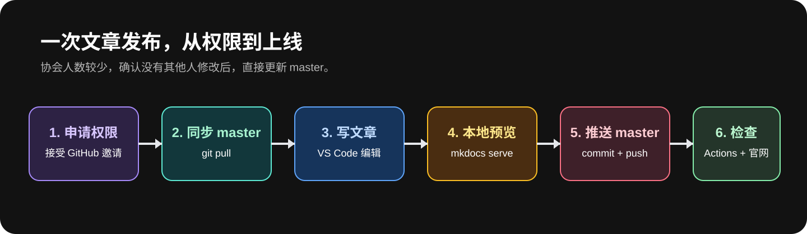
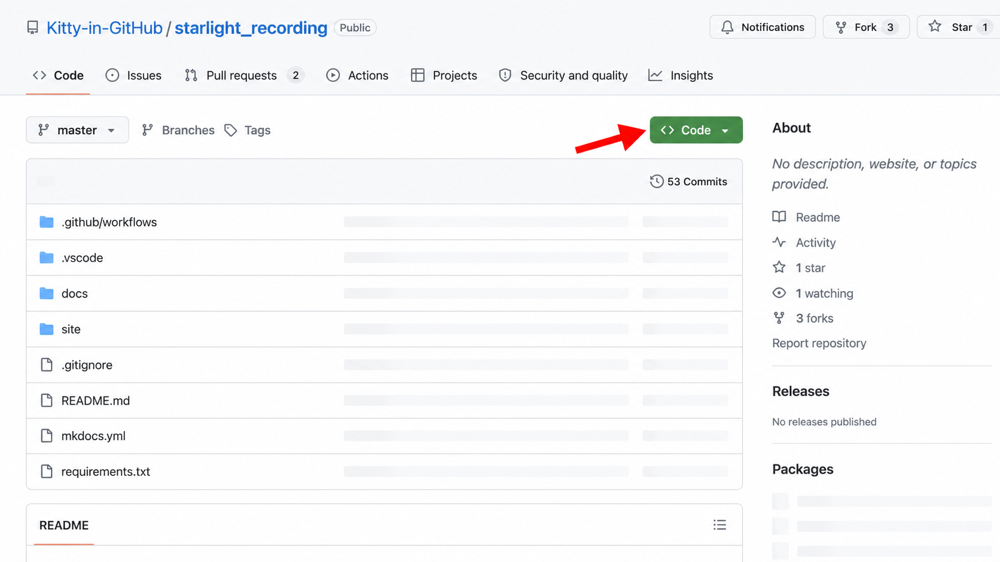
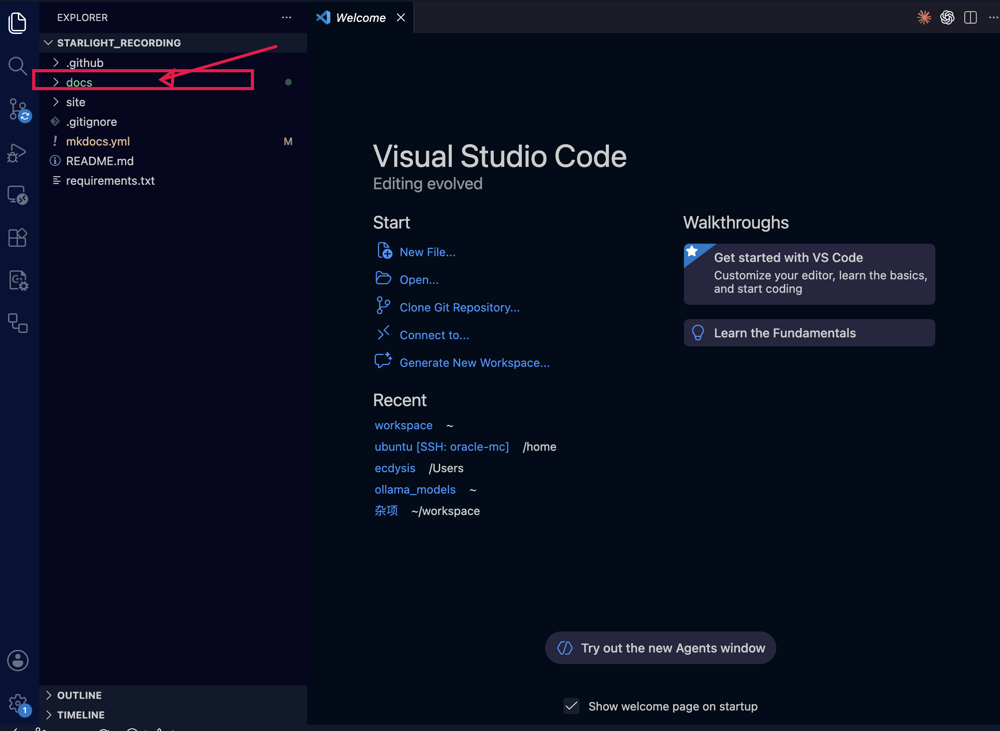
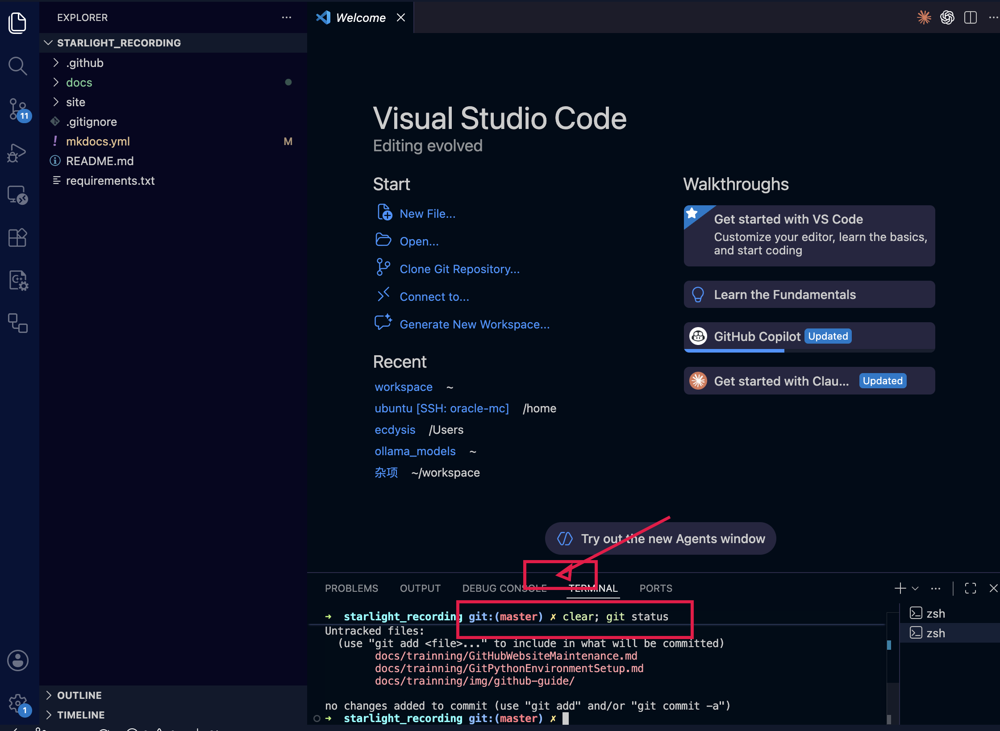
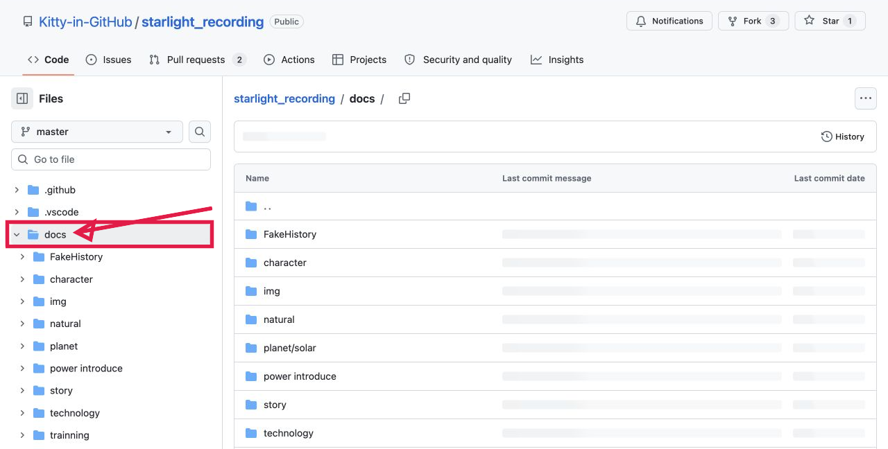
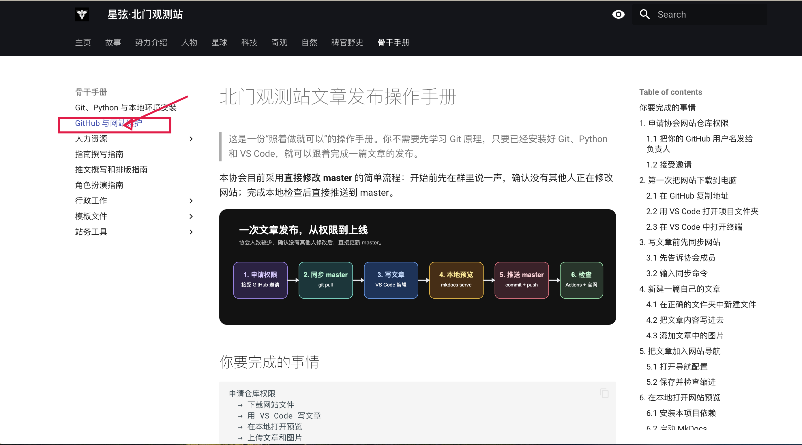
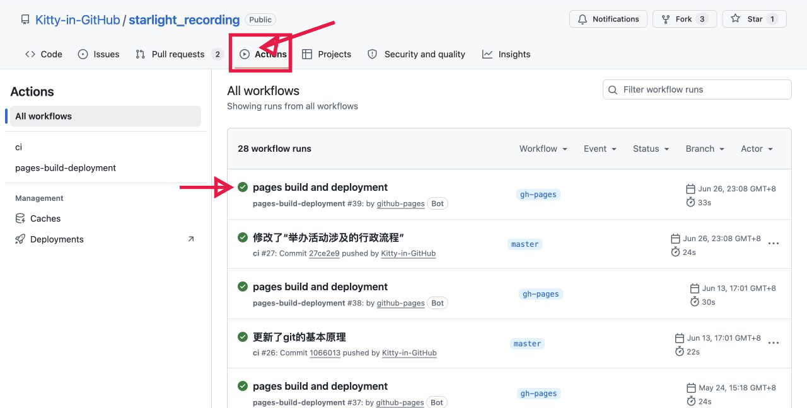

北门观测站文章发布操作手册¶
这是一份“照着做就可以”的操作手册。你不需要先学习 Git 原理，只要已经安装好 Git、Python 和 VS Code，就可以跟着完成一篇文章的发布。
本协会目前采用直接修改 master 的简单流程：开始前先在群里说一声，确认没有其他人正在修改网站；完成本地检查后直接推送到 master。

你要完成的事情¶
申请仓库权限
→ 下载网站文件
→ 用 VS Code 写文章
→ 在本地打开预览
→ 上传文章和图片
→ 检查正式网站
Git、Python 和 VS Code 的安装请先看：Git、Python、VS Code 与本地环境安装指南。
1. 申请协会网站仓库权限¶
1.1 把你的 GitHub 用户名发给负责人¶
打开 https://github.com/ 并登录。点击右上角头像，你会看到自己的用户名。把这个用户名发给协会网站负责人，请对方把你加入网站仓库的协作者。
不要把 GitHub 密码、验证码、Personal Access Token 或 OAuth 密钥发给任何人；负责人只需要你的用户名。
1.2 接受邀请¶
负责人发出邀请后，你会在 GitHub 通知、注册邮箱或仓库页面看到邀请。点击 Accept invitation，再重新打开协会仓库。
图 1｜协会仓库主页（真实截图）。 先确认浏览器打开的是 Kitty-in-GitHub/starlight_recording，分支下拉框显示 master，页面能看到绿色 Code 按钮。

如果打开仓库显示 404、没有文件，或看不到负责人说的仓库，请把页面截图发给负责人，不要重复申请多个账号。
2. 第一次把网站下载到电脑¶
这一步只做一次。以后每次写文章，从第 3 节开始。
2.1 在 GitHub 复制地址¶
- 打开协会网站仓库主页。
- 点击绿色 Code。
- 确认选择 HTTPS。
- 点击右侧复制图标。
2.2 用 VS Code 打开项目文件夹¶
- 打开 VS Code。
- 点击 File → Open Folder…。
- 选择网站文件夹 starlight_recording。
- 点击 Open。
打开成功后，左侧 Explorer 应看到 docs、site、mkdocs.yml 和 requirements.txt。

如果电脑还没有这个文件夹，在 VS Code 的终端中输入下面三行；把尖括号替换为刚才复制的地址：
git clone <协会网站仓库的 HTTPS 地址>
cd starlight_recording
code .
2.3 在 VS Code 中打开终端¶
在 VS Code 顶部菜单点击 Terminal → New Terminal。终端会出现在窗口下方。
确认终端路径最后是 starlight_recording，然后输入：
git status
如果看到 On branch master，就可以继续。第一次操作如果看到文件列表，也不要害怕；先截图联系负责人确认。

3. 写文章前先同步网站¶
3.1 先告诉协会成员¶
在协会工作群说：“我现在准备修改网站，预计修改 XXX 页面。”确认没有其他人正在编辑同一页面后再继续。
3.2 输入同步命令¶
在 VS Code 下方的终端中，一行一行复制并按回车：
git switch master
git pull origin master
看到 Already up to date. 表示你电脑里的版本已经是最新的；看到一串更新文件也通常表示同步成功。
如果负责人通知你有人正在维护网站，请先等待，不要同时推送。
4. 新建一篇自己的文章¶
下面以“新建一篇站务教程”为例。你可以把文件名和文章内容换成自己的主题。
4.1 在正确的文件夹中新建文件¶
在 VS Code 左侧 Explorer 中：
- 展开 docs。
- 展开 trainning。
- 右键点击 trainning 文件夹。
- 点击 New File。
- 输入文件名，例如 MyFirstGuide.md，按回车。
文件名建议只使用英文、数字和下划线。比如：
MyFirstGuide.md
ActivityGuide.md
2026SpringPlan.md
4.2 把文章内容写进去¶
在新文件中复制下面这个模板，再替换标题和正文：
# 文章标题
这里写一两句话，说明这篇文章是做什么的。
## 第一个小标题
这里写正文。
## 第二个小标题
- 第一项
- 第二项
写完后按 Command + S（macOS）或 Ctrl + S（Windows）保存。保存只会改你电脑里的文件，还没有上传。
保存后，中间编辑区的文件名旁边会出现修改标记；这是正常的，等第 7 节的 git add、git commit 和 git push 才会上传。
4.3 添加文章中的图片¶
把图片文件复制到文章对应的图片文件夹。骨干手册文章的图片放在：
docs/trainning/img/
在 VS Code 左侧把图片拖进这个文件夹，或者直接把图片复制到该文件夹。文件名建议使用英文，例如 borrow-classroom-step1.png。
在文章中写：

保存后，图片引用的文件名必须与实际文件名完全一致，包括大小写。
5. 把文章加入网站导航¶
只新建 Markdown 文件，网站左侧导航中还找不到它。还需要修改根目录的 mkdocs.yml。
5.1 打开导航配置¶
在 VS Code 左侧点击根目录的 mkdocs.yml。找到你希望放文章的栏目。例如“骨干手册”现在是：
- 骨干手册:
- Git、Python 与本地环境安装: trainning/GitPythonEnvironmentSetup.md
- GitHub 与网站维护: trainning/GitHubWebsiteMaintenance.md
在相同的缩进位置增加一行：
- 我的第一篇教程: trainning/MyFirstGuide.md
左侧文字是网站上显示的标题，右侧是文件从 docs 开始的路径。
5.2 保存并检查缩进¶
按 Command + S / Ctrl + S 保存。YAML 缩进只能使用空格，不要按 Tab。新增行必须和相邻的文章保持同样的缩进。
如果你不确定放在哪个栏目，先不要修改导航，截屏发给负责人确认。

6. 在本地打开网站预览¶
6.1 安装本项目依赖¶
在 VS Code 下方终端确认当前路径是 starlight_recording，然后根据系统输入：
macOS：
python3 -m pip install -r requirements.txt
Windows：
py -m pip install -r requirements.txt
第一次安装可能需要等待几分钟；看到命令重新出现输入光标，通常表示完成。
6.2 启动 MkDocs¶
继续在同一个终端输入：
mkdocs serve
终端出现 Serving on http://127.0.0.1:8000/ 后，按住 Command / Ctrl 点击网址，或复制到浏览器打开。

打开文章后检查：
- 新文章能否从导航找到；
- 标题和正文是否正常；
- 图片是否显示；
- 有没有红色报错；
- mkdocs.yml 修改后导航有没有错位。
修改文件并保存后，浏览器一般会自动刷新。预览结束时回到终端按 Ctrl + C 停止服务。
如果出现 YAML 报错、找不到图片或页面打不开，先不要上传，截取终端完整报错联系负责人。
7. 把文章上传到 GitHub¶
确认本地预览没有问题后，在 VS Code 终端按顺序执行。
7.1 查看要上传的文件¶
git status
只应该看到你刚才新增或修改的文章、图片和 mkdocs.yml。如果出现你不认识的文件，先停止。
7.2 加入、提交、推送¶
把命令中的路径替换为你自己的文件：
git add docs/trainning/MyFirstGuide.md
git add docs/trainning/img/borrow-classroom-step1.png
git add mkdocs.yml
git commit -m "docs: add my first guide"
git push origin master
如果文章没有图片，可以不写第二条 git add。每一条命令输入后按回车，看到下一行输入光标再输入下一条。
提交说明要写清楚改了什么，例如：
docs: add borrowing classroom guide
docs: add 2026 spring activity plan
fix: correct image path in publicity guide
重要： git push origin master 会直接更新协会仓库。执行前必须再次确认：本地预览没问题、群里没人同时修改、git status 中没有无关文件。
8. 检查网站是否真的更新¶
推送完成后，打开 GitHub 仓库的 Actions 标签。等待最新的一次工作流出现绿色成功标志。

看到成功后，打开协会正式网站，进入你新增的栏目检查文章。若 Actions 红色失败，点击进去查看错误；不要反复推送相同内容，先把错误截图发给负责人。
9. 这套简单流程的约定¶
- 每次开始前在群里说一声，避免两个人同时改 master。
- 只修改自己负责的文章、图片和必要的导航行。
- 不要手动修改 site。
- 上传前一定要运行 mkdocs serve。
- 不要提交密码、Token、OAuth 密钥或私人资料。
- 发现冲突、红色报错或不确定的文件，停止并截图求助。
10. 发布前检查清单¶
- 已获得协会仓库访问权限。
- 已在 VS Code 打开整个 starlight_recording 文件夹。
- 已执行 git switch master 和 git pull origin master。
- 文章文件放在正确的 docs 子目录。
- 图片放在 docs 内，并用相对路径引用。
- 新文章已加入 mkdocs.yml 导航。
- 本地 mkdocs serve 页面检查通过。
- git status 中没有无关文件。
- 已完成 git add、git commit、git push origin master。
- GitHub Actions 成功，正式网站能打开文章。